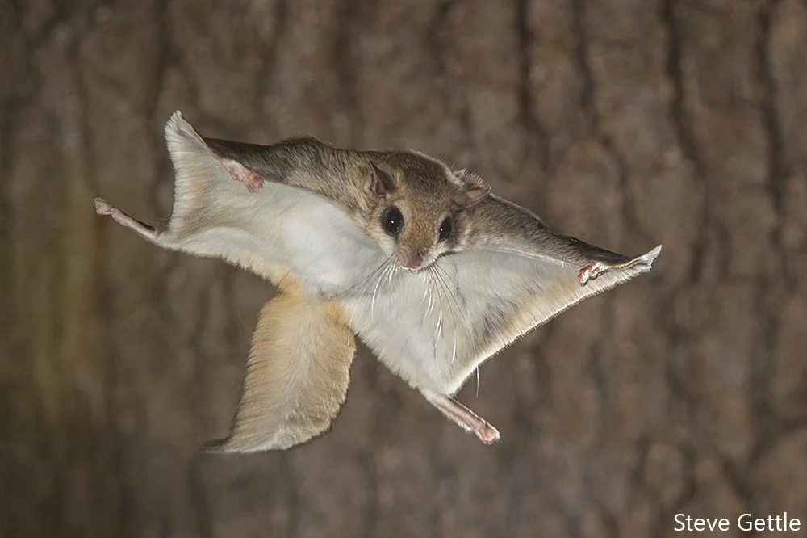
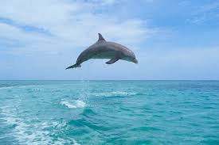
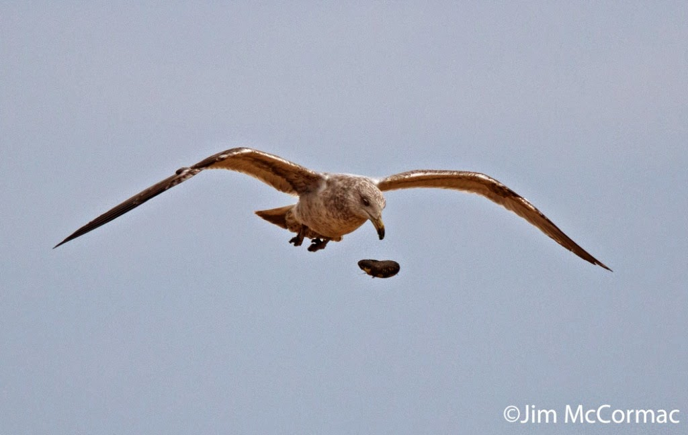

I took this photo in our voyage through the carribean.

This is Doms favorite photo he took. He brags about it and posts it everywhere he loves this bird with a passion.

This bird means more to me and Dom than life itself. Dom even owns a pet ostritch
This is a photo of Dom's pet ostritch his name is Josh Norman, but he goes by larry.
This is when Dom tried to ride him around town, but larry ran off on his own.

Many people think the Chicken can not fly, but that is false. The Chicken can fly and we have proof
This is our pet Chicken, Luke Mueller he wears backward hats and wired headphones
As we see in the photo he can fly proving he is a Bird

Many people say this bird is a myth and they trully are wrong, we even have our own pet Squirrel
He goes by the name of justin son he can fly and we love taking photos of him
This photo we had to travel thousands of miles just to take this at the right time, it was sick.
This bird may be the coolest bird me and dom ever caught on camera. To be honest I thought it was fake
All I can say is ask Luke Mueller.
He goes by the name of Gease the great and he lives in our backyard with some of the other birds

This bird is very beautifull. He is a flying dolphin
He is the only one in the world we found him exploring in the amazon river where we tamed him with some fish
This bird now lives with us now in our pool and his name is Fitz Nawitzki
The Clam, the Clam, the Clam. This bird isn't as rare as the others, but still very cool
Throughout or journey through Nebraska, Dom saw one flying and had to capitlize.
He caught it in the act flying, quickly caught it and tamed it
It lives in our pool with the Flying Fish and Flying Dolphin, Dom named it Sally the third
